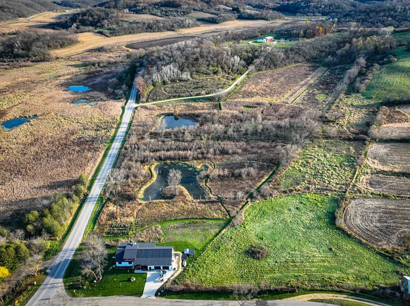

field notes ·
Not every drone “fly-through” is the same
Live flyovers, FPV runs, quick app scans and measured 3D models all get sold as “aerial video” for listings. They look similar in a thumbnail. Underneath, they are different products, built different ways, and only one of them is a measurement. Here’s how to tell them apart.
 Watch: a fly-through rendered from a measured model
Watch: a fly-through rendered from a measured modelFour things sold as aerial video
- Live flyoverThe drone flies a path and records it. Real footage in real light, but it’s one pass: framing is limited by trees, wires, wind and the 400-foot ceiling, and a new angle means a new flight. No scale, no geometry.Good for: a quick establishing shot
- FPV videoA small, agile drone flown by hand through and around a property, often through doorways and low over the ground. Dramatic and cinematic. It’s a performance, not a record of the land.Good for: energy and wow on social
- Quick app scanAn app flies a preset orbit and builds a 3D model in minutes from a few hundred photos tagged with the drone’s standard GPS. Fine for one building. On acreage, edges sag, scale drifts, and ground surfaces smear.Good for: a single structure
- Measured 3D modelPlanned grid and angled flights at high overlap, positions corrected by RTK, the model tied to ground control and checked. The fly-through is rendered from that model, so the camera can go anywhere and the land is shown at true scale.Good for: acreage, multiple parcels, land as the selling point
What “measured” actually means
A model is only as good as the photos and positions behind it. Five terms separate a model that looks right from one that is right.
- GSD
- Ground sample distance: how much ground one pixel covers. Smaller is sharper. It’s set by flight height and camera, and it should be planned, not whatever the drone happened to fly at.
- Overlap
- How much each photo shares with its neighbors, typically 70–80% front and side for mapping. High overlap means every point on the ground is seen from many angles, which is what lets the software rebuild it in 3D.
- Nadir + oblique
- Straight-down photos give a true-to-scale map but see mostly roofs and treetops. Angled photos add walls, slopes and tree sides. A good model uses both.
- RTK
- Real-time kinematic correction. A drone’s standard GPS can be off by several feet; RTK corrects each photo’s position to the centimeter level while flying.
- GCPs & checkpoints
- Ground control points are marked targets measured on the ground that the model is tied to. Checkpoints are extra measured targets left out of processing, used afterward to test the result. The error at the checkpoints is the honest answer to “how accurate is it?”
The Blue Mounds property was captured with more than 1,000 overlapping photos, straight down and angled, every one RTK-tagged, with the model tied to ground control. That’s why the fly-through can sweep the full 15 acres without the land stretching or bending at the edges.
Where the property lines come from
Boundary lines on listing photos are usually drawn from county parcel data: digital maps compiled from plats and deeds for tax and planning purposes. They’re the best public record of what a parcel includes, but they are not a survey, and their position on the ground can be off, sometimes by several feet or more, depending on the county and the parcel.
How the lines get onto the photo matters too. Lines traced by eye onto an angled photo drift fast as the ground rises and falls. Novak|GS projects the county parcel geometry into each photo using the camera’s recorded position and orientation, so the line sits where the parcel data says it is, and multiple lots can be merged into one outline. It’s still the county’s line, labeled as an illustration, never a survey.
Questions to ask any drone provider
- Are you Part 107 certified and insured?Commercial drone work requires an FAA Remote Pilot Certificate. Ask for it, and for proof of insurance, before anyone flies a client’s property.
- Is the fly-through live footage or rendered from a 3D model?Both are legitimate. They are different products, and the price should reflect which one you’re getting.
- If it’s a model, how was it positioned?Standard GPS, RTK, ground control, or checkpoints? “It looks right” is not an answer.
- Where do the boundary lines come from, and how are they placed?County parcel data projected into the photo, or traced by eye? Either way, they should be labeled as illustrative.
- Do I get an unbranded version for MLS?Most MLSs require unbranded virtual tours and videos. You want both versions delivered.
- Who owns the files, and how long are they kept?Know whether you can reuse the video and photos after closing, and whether the raw data is archived for later use.
The same capture, more than one product
Because the model is built from a full mapping flight, the same visit also produces the listing aerials and parcel-overlay photos. See the full Blue Mounds case study for the complete package.


Maps, models and parcel overlays are produced from drone photography for visualization and measurement. They are not a land survey and do not establish property boundaries.